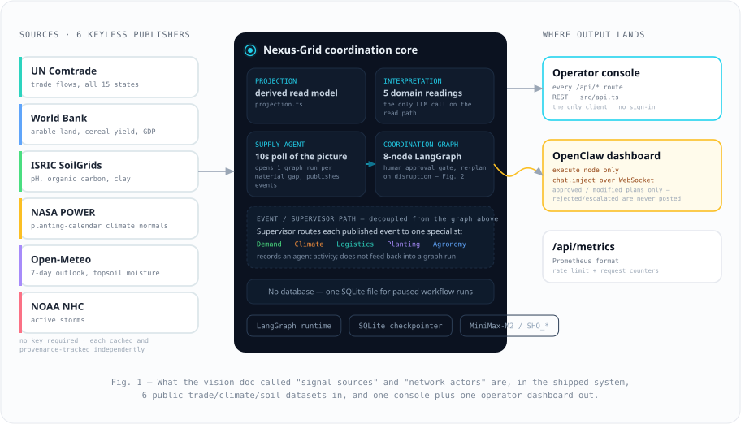
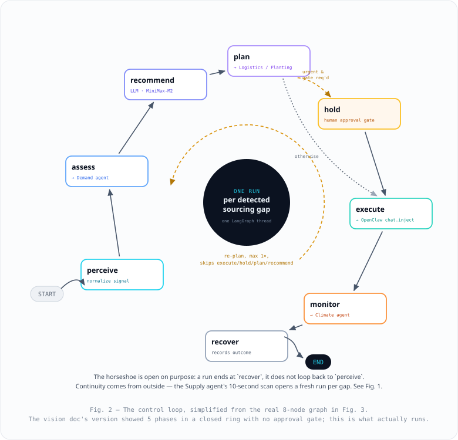
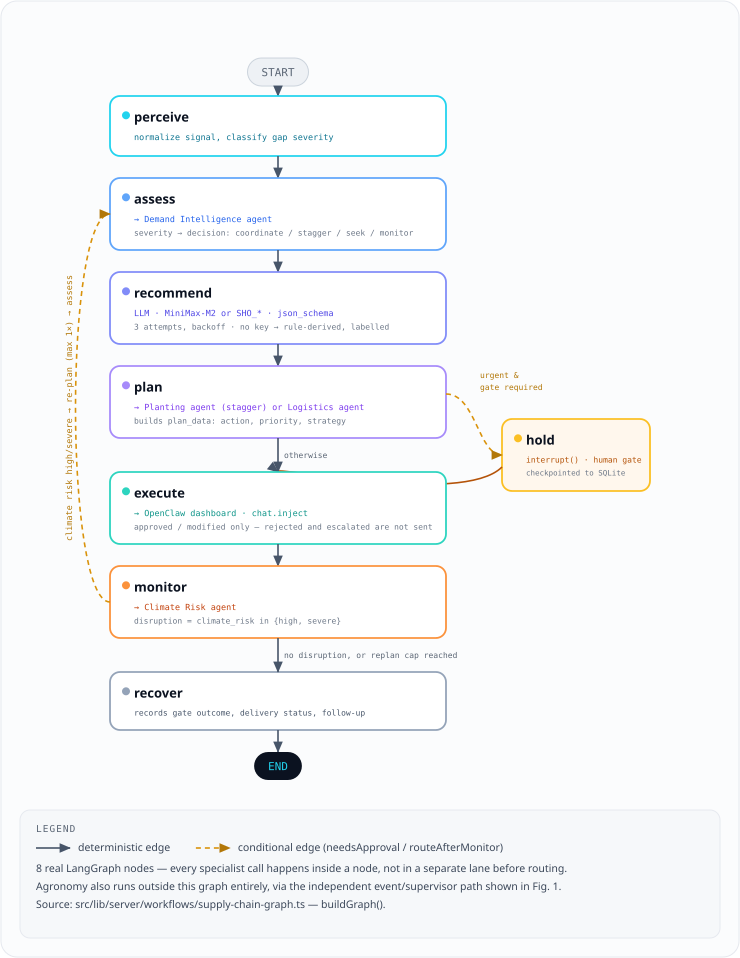
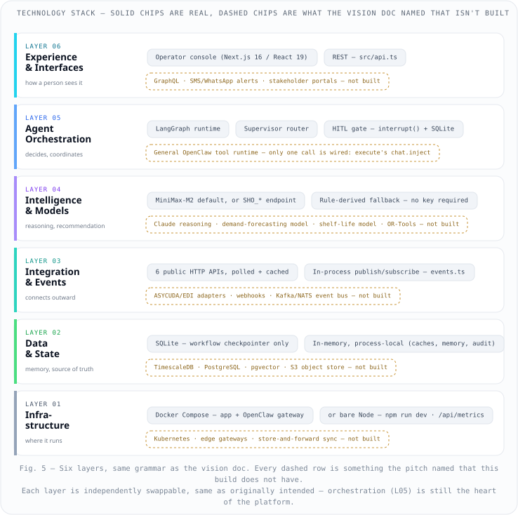
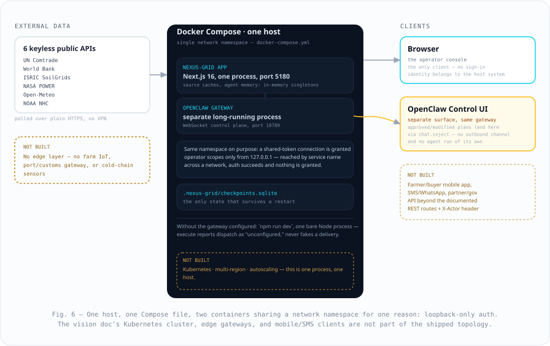
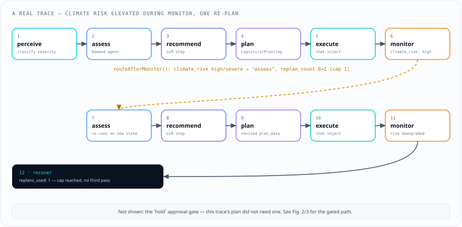

|
Nexus-Grid · Technical Architecture — As Built
Autonomous Agentic Orchestration for Caribbean Food Systems & Supply ChainsAn AI orchestration layer that perceives regional trade gaps, reasons over supply and demand, plans a coordination response, and — for urgent plans — pauses for a human before executing. This edition matches the code: ARCHITECTURE.md is the source of truth, and the original pitch document (
As built
Track · Food Systems & Supply Chains
Future Caribbean Buildathon 2026
OpenClaw × LangGraph
01 · Executive SummaryNexus-Grid is an autonomous, AI-powered orchestration platform that reads live UN Comtrade trade flows across 15 CARICOM member states and finds the part of the region's $1.52B food-import bill it could supply itself. It functions as a coordination layer, not a marketplace: it holds no domain records — farmers, crops, shipments and customs filings live in the systems it coordinates — and it does not buy, sell, hold stock, or list supply. A control loop reasons over each sourcing gap and, for urgent plans, posts an operator's decision to a real dashboard rather than acting unattended. 6
Keyless public data sources — no paid or credentialed feed
7
Agents — 1 supervisor + 6 specialists (src/lib/server/agents)
1×
Re-plan cap per coordination run (MAX_REPLANS)
10s
Supply agent scan interval while the process runs
02 · The ProblemThe Caribbean imports roughly 80% of its food while holding the capacity to produce more of it. The constraint is not the absence of systems — agriculture, logistics, trade and distribution systems all exist and all work. They do not work together: production decisions are made without visibility into regional demand, planting is not aligned across islands, and a state routinely buys a commodity from outside the region while a fellow member state already exports that same commodity into it. A state buys externally while a CARICOM neighbor already exports the same commodity into it. Only 9.1% of observed food imports move inside CARICOM — the rest crosses the region's own border outward. Rain-fed planting calendars are set island by island, with no shared view of complementary windows. Climate risk at a lane's two endpoints is never scored together before a coordination decision is made. The Nexus-Grid thesis
Make the region's trade, soil, planting and climate data observable together, then reason over the result — surfacing where regional supply could displace an outside import, and routing the ones worth acting on to a human. 03 · High-Level System ArchitectureSix public datasets flow in; two outputs flow out. There is no farmer, buyer, customs or logistics-provider integration — the platform's audience is one operator console and, for approved plans only, one OpenClaw dashboard.  04 · The Control LoopEach detected sourcing gap opens one fresh coordination run — a single LangGraph thread — rather than one process looping forever. Continuity comes from outside the graph: the Supply agent's 10-second scan opens a new run per gap. Inside one run, a disruption caught at  recover, it does not loop back to perceive.05 · LangGraph Agent GraphNexus-Grid is implemented as a stateful LangGraph with 8 nodes:  06 · Stakeholder Data Flow not built as envisionedThe original pitch (this document's earlier draft) proposed a hub exchanging data bidirectionally with five stakeholder types — Farmers, Distributors, Logistics Providers, Customs Authorities, Commercial Buyers — each with its own live integration. None of that exists: there is no farmer or buyer portal, no ERP/POS connector, no ASYCUDA or customs integration, and no carrier booking API. Building it would require paid, credentialed, per-country integrations the project deliberately avoided (see ARCHITECTURE.md §4, "Not wired"). What shipped instead
Two real outputs, not five stakeholder integrations: an operator console any team member can read over REST, and — for a plan a human has approved or amended — one notice posted into an OpenClaw dashboard. See Fig. 1. 07 · Technology StackSix layers, same grammar as the original pitch — from the operator-facing console down to the one process and one Docker host that run it. Each layer is still independently swappable, and orchestration (L05) is still the platform's heart; what changed is which vendor sits in each slot.  08 · Deployment TopologyOne Docker host runs the app and the OpenClaw gateway it dispatches to, sharing a network namespace for one specific reason: the gateway grants operator scopes only to connections from  09 · Disruption-Recovery SequenceA worked example, taken from an actual recorded trace rather than a hypothetical: elevated climate risk at the importing state is caught by  hold approval gate is not on this particular trace; see Fig. 2 / 3 for the gated path.10 · One Coordination Run, End to End revisedThe original pitch walked a harvest lot through six stakeholder handoffs — declared, matched, routed, cleared, monitored, paid. No individual farmer, buyer, or harvest lot exists in this system: it reasons over aggregate UN Comtrade trade statistics, not transactions. This is what actually happens, six steps, no stakeholder actors involved. 1
Gap Detected
Supply agent's scan finds a lane past the $5M / 60% threshold.
perceive
2
Severity Assessed
Demand Intelligence agent scores it; a decision is chosen.
assess
3
LLM Recommendation
MiniMax-M2 (or rule-derived, if no key) returns a structured schema.
recommend
4
Plan Built
Logistics or Planting agent shapes plan_data and a priority.
plan
5
Gate, If Urgent
A human answers approved / modified / rejected / escalated.
hold
6
Posted, If Approved
chat.inject puts it on the OpenClaw dashboard; rejected plans are never sent.
execute
11 · What Actually Holds UpObserved, not estimated The $1.12B addressable figure is the sum of real UN Comtrade flows where one CARICOM state buys externally what another already supplies — not a projection. A monitor step that watches Elevated climate risk triggers one automatic re-plan back through assess before a human sees the recommendation — not a one-shot answer. Runs on a laptop Built on LangGraph + OpenClaw, checkpointed to one SQLite file. `docker compose up` — no cloud region, no Kubernetes, no edge sync required. Coordination, not a marketplace It augments the actors already in the system instead of asking them to migrate to a new platform — the one claim from the original pitch that needed no revision. Nexus-Grid v1.0 · Future Caribbean Buildathon 2026 · Food Systems & Supply Chains · OpenClaw × LangGraph |